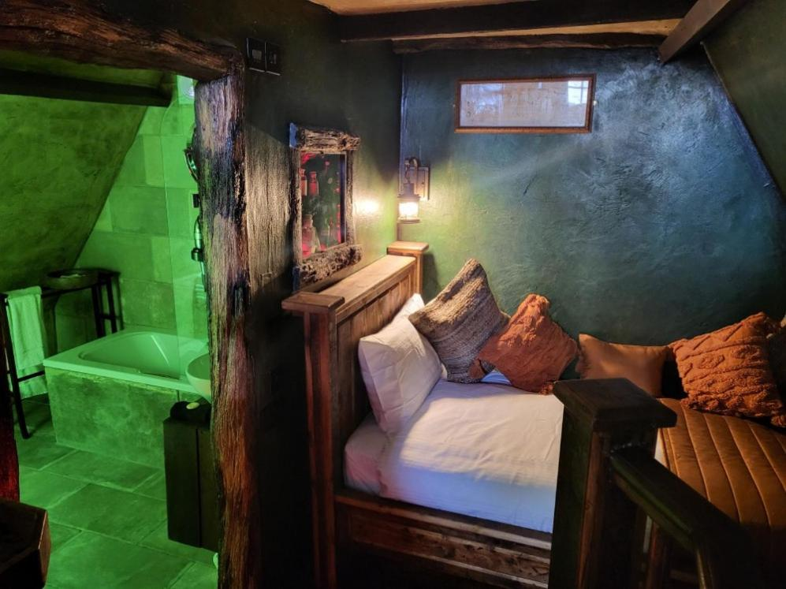
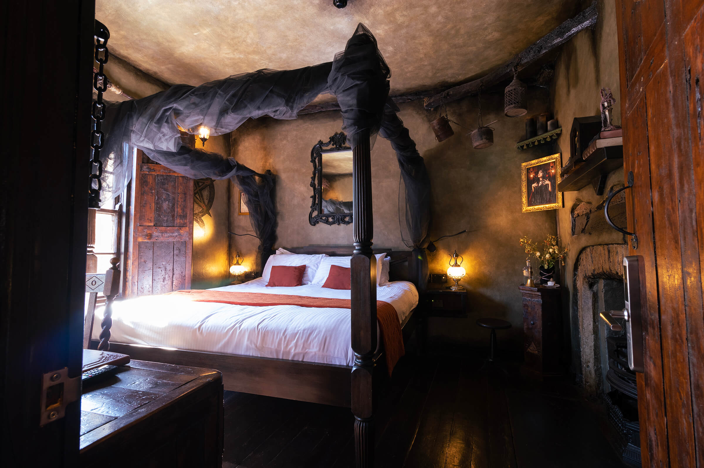
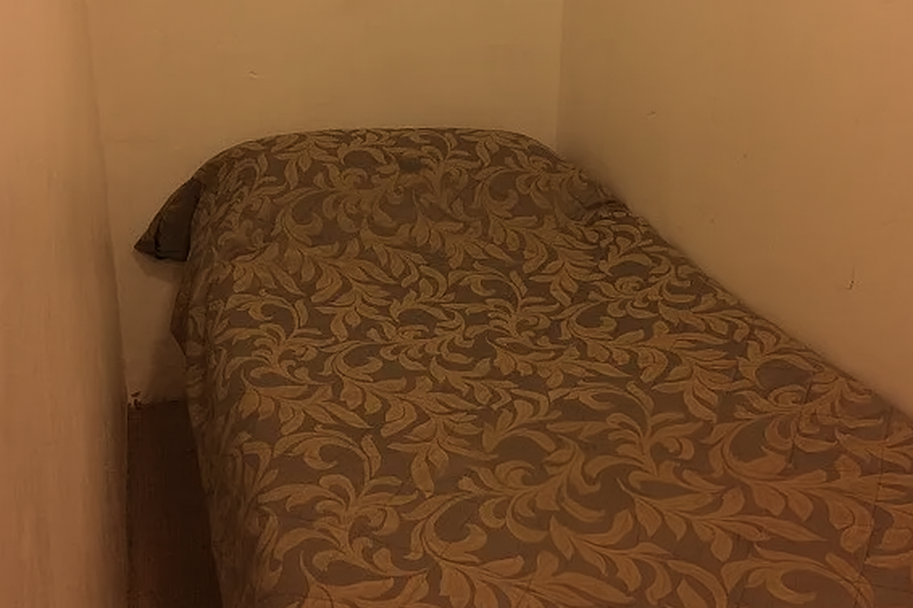

Magic on tap since 1500
Welcome to The Leaky Cauldron—London's oldest and most magical inn, nestled at the entrance to Diagon Alley. The building is located on Charing Cross Road, although muggle eyes are not quite sharp enough to see it. Stop in for a butterbeer or a firewhiskey on your way to and from shopping. Or if your travels are long, kip in for the night in one of our room styles.




